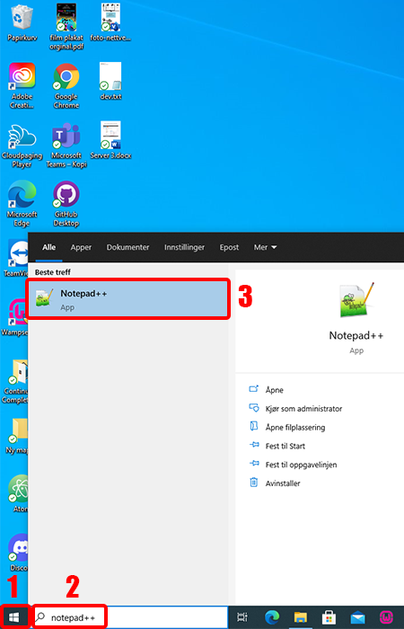
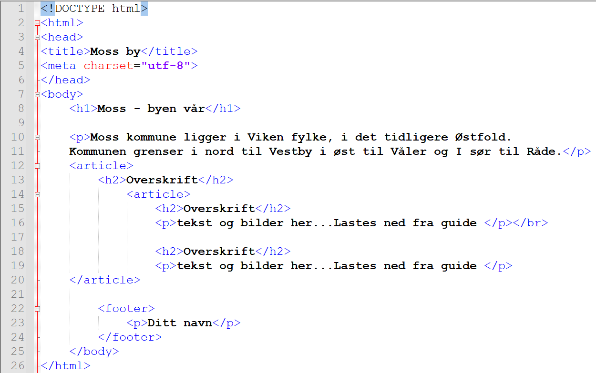
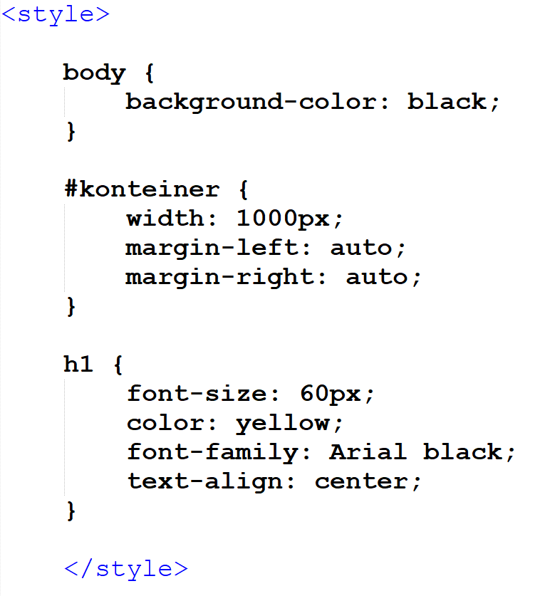
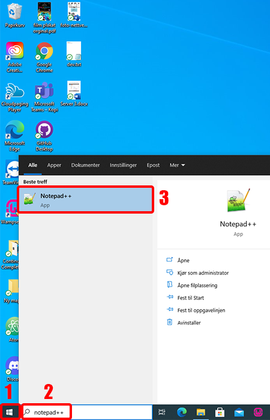
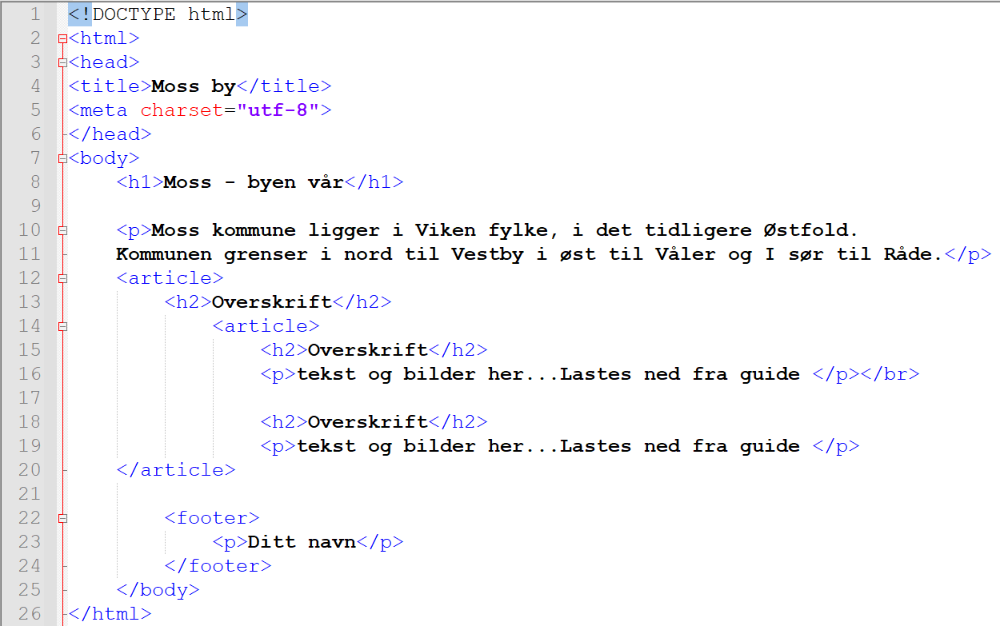
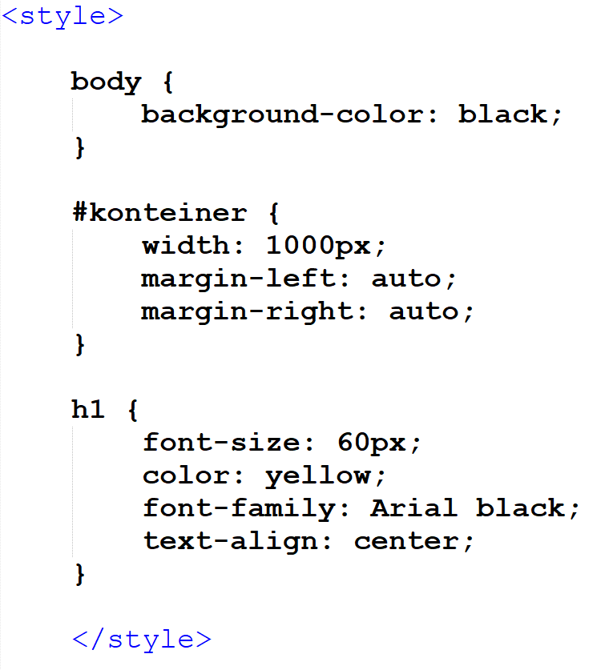

1
 





Start med å trykke på filutforsker ikonet på oppgave linjen eller trykk på windows + E.
Høyreklikk på 'C' disken. trykk på ny, også trykk på mappe. Navngi denne mappen wamp.
Dette er hvor vi skal lagre alle filene til nettsiden vi lager.
Høyreklikk på 'C' disken. trykk på ny, også trykk på mappe. Navngi denne mappen wamp.
Dette er hvor vi skal lagre alle filene til nettsiden vi lager.